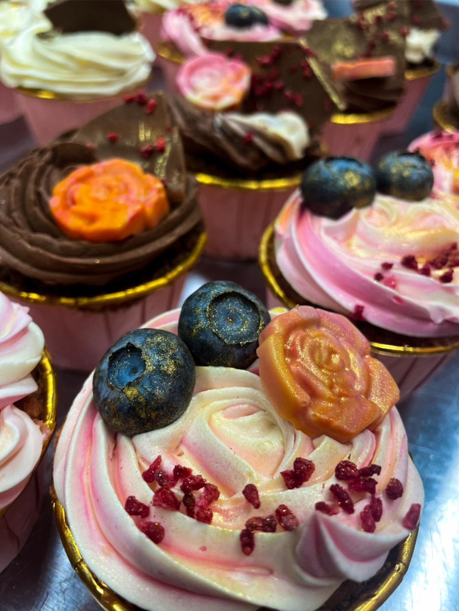
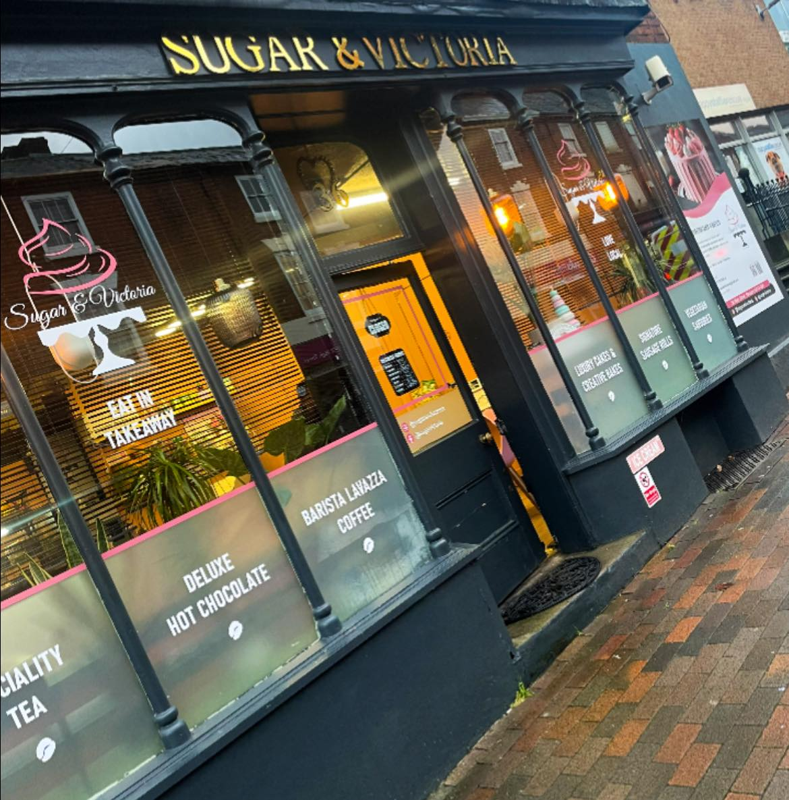
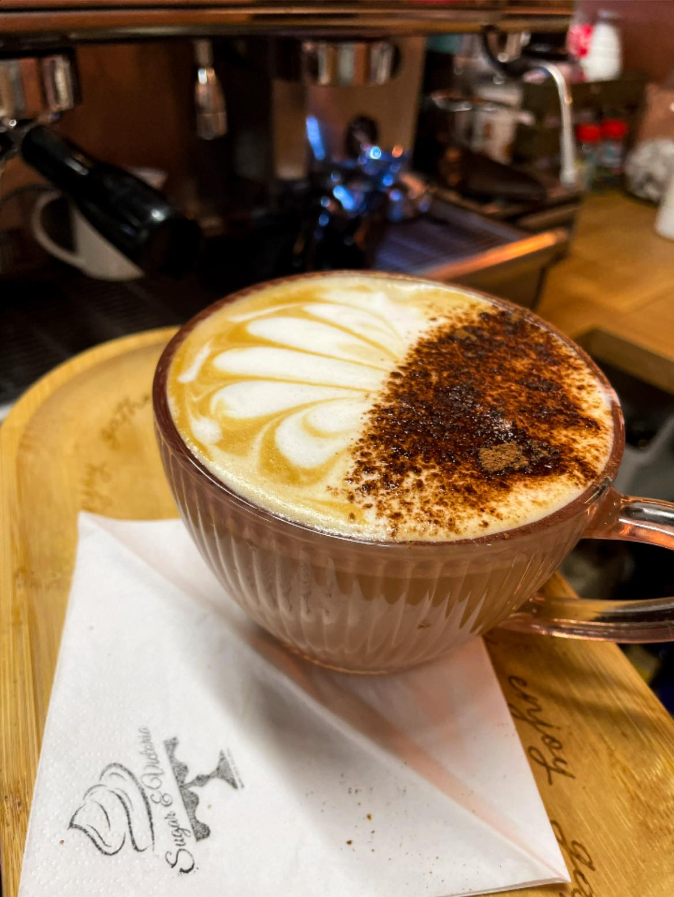
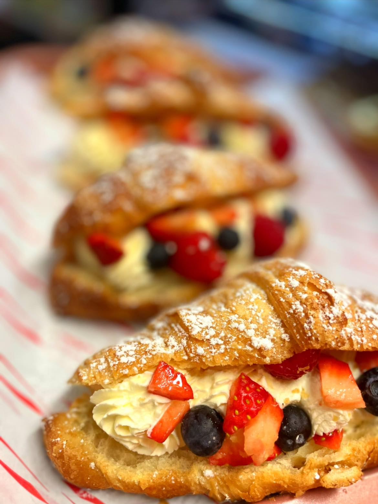
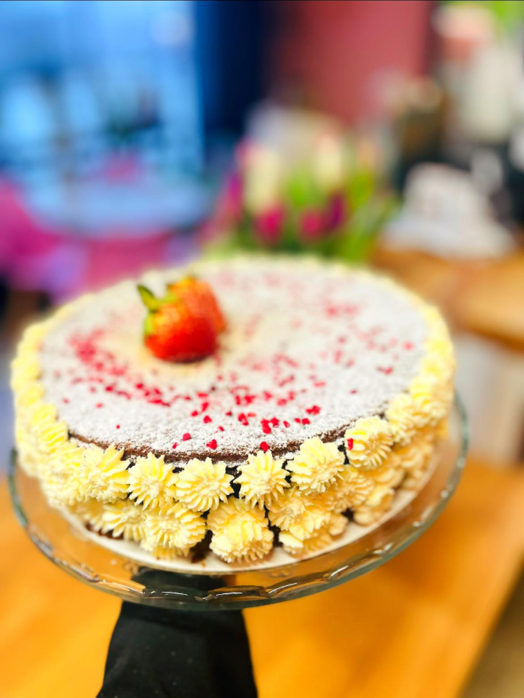
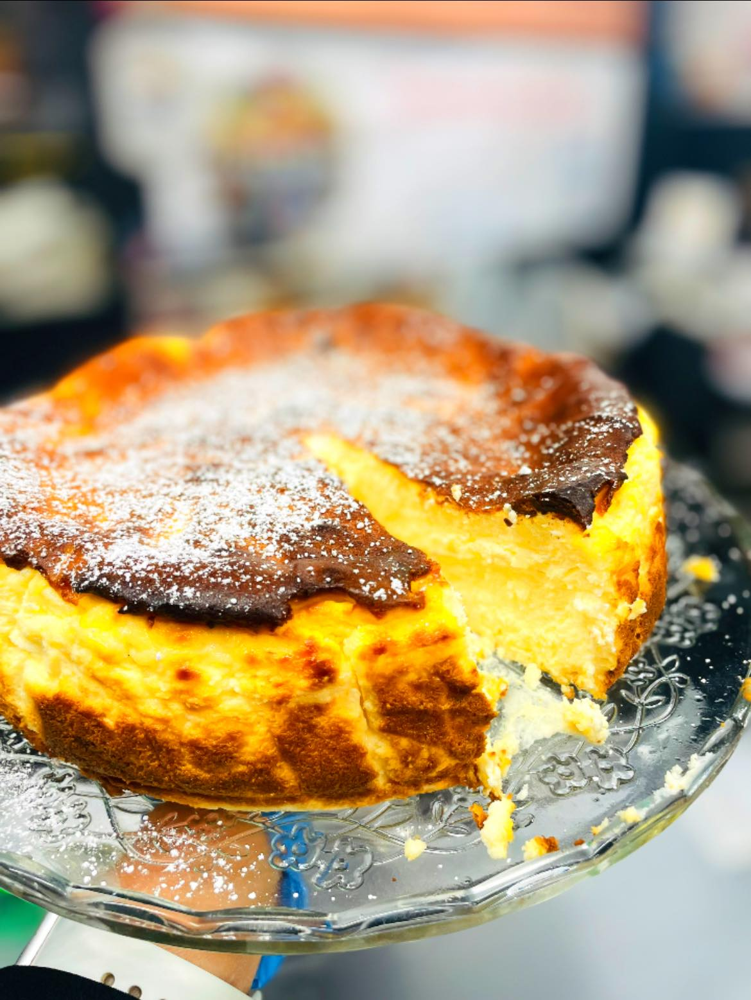
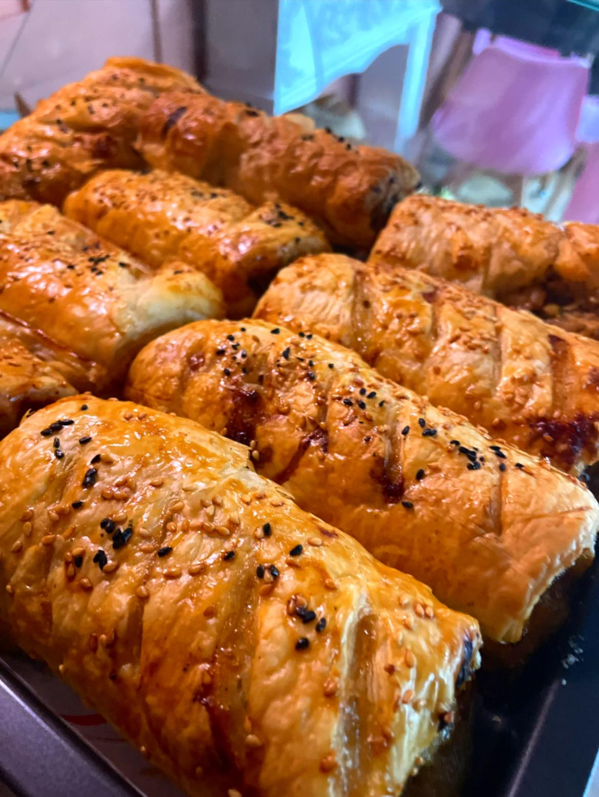
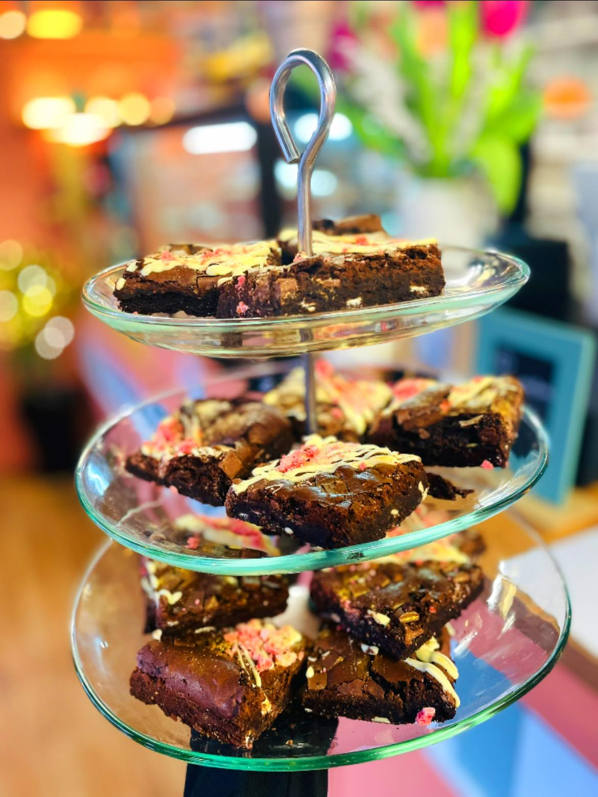
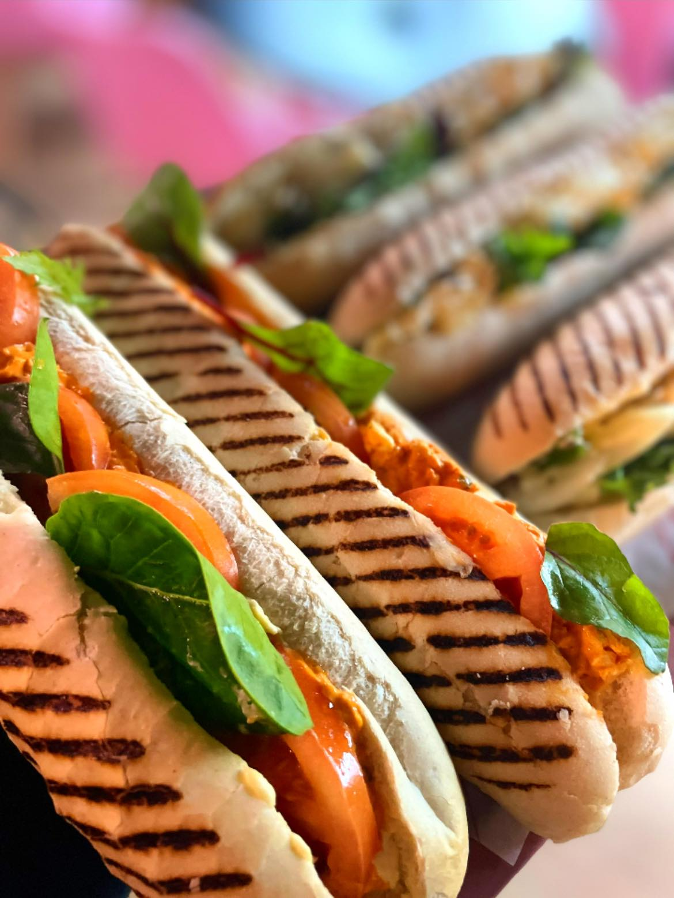

Sugar & Victoria
Sugar & Victoria
Handcrafted Desserts
Elegant cakes and sweet creations prepared to delight both regulars and first-time visitors.

Welcome to Sugar & Victoria, your cosy independent cafe in Stourport-on-Severn, Worcestershire, known for handmade desserts, fresh pastries, rich coffee, and comforting bites.
From flaky pastries and signature desserts to well-loved sausage rolls and barista coffee, Sugar & Victoria offers friendly service and a warm space to pause, catch up, and indulge.

Elegant cakes and sweet creations prepared to delight both regulars and first-time visitors.

Thoughtfully brewed coffee that pairs perfectly with cake, conversation, and cosy mornings.

From buttery croissants to popular sausage rolls, our counter is full of daily temptations.
A rotating glimpse of guest favourites from across our drinks, bakes, and signature desserts.




